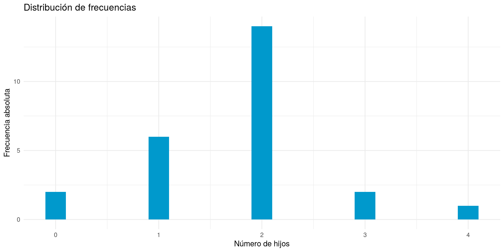
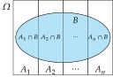
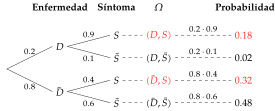

# Diagrama de barras
df |> ggplot(aes(x=hijos)) +
geom_bar(width = 0.2, fill = myblue) +
theme_minimal() +
labs(title = "Distribución de frecuencias",
x = "Número de hijos", y = "Frecuencia absoluta")Distribuciones de frecuencias

Probabilidad, frecuencias, distribuciones y regla de Bayes
Distribuciones de frecuencias
Definición 1 (Frecuencias muestrales) Dada una muestra de tamaño \(n\) de una variable \(X\), para cada valor de la variable \(x_i\) observado en la muestra, se define
Ejemplo 1 Si tomamos una muestra aleatoria de 10 personas y 6 mujeres, entonces la frecuencia absoluta de mujeres es \(n_i=6\) y la frecuencia relativa es \(f_i=6/10=0.6\).
Las frecuencias muestrales se suelen organizar en tablas de frecuencias, que muestran para cada valor observado de la variable \(x_i\) su frecuencia absoluta \(n_i\) o su frecuencia relativa \(f_i\).
Ejemplo 2 Número de hijos en una muestra de 25 familias.

Cuando se tienen dos variables, es posible organizar sus frecuencias en una tabla de contingencia, que muestra para cada combinación de valores de las variables su frecuencia absoluta o relativa.
Ejemplo 4 Sexo y grupo sanguíneo de una muestra de 30 personas.
| grupo | Hombre | Mujer |
|---|---|---|
| 0 | 3 | 2 |
| A | 8 | 6 |
| AB | 0 | 3 |
| B | 3 | 5 |
Sumando por filas o por columnas de una tabla de contingencia se obtienen las distribuciones marginales de cada variable, que muestran la frecuencia absoluta o relativa de cada valor de la variable sin tener en cuenta la otra variable.
Ejemplo 5
| grupo | Hombre | Mujer |
|---|---|---|
| 0 | 3 | 2 |
| A | 8 | 6 |
| AB | 0 | 3 |
| B | 3 | 5 |
| Total | 14 | 16 |
Cada fila o columna de una tabla de contingencia es una distribución de frecuencias condicional que muestra la frecuencia absoluta o relativa de cada valor de una variable para un valor fijo de la otra variable.
Ejemplo 6
| grupo | Hombre | Mujer |
|---|---|---|
| 0 | 3 | 2 |
| A | 8 | 6 |
| AB | 0 | 3 |
| B | 3 | 5 |
Probabilidad
Definición 2 (Probabilidad - Laplace) Dado un espacio muestral \(\Omega\) de un experimento aleatorio donde todos los elementos de \(\Omega\) son equiprobables, la probabilidad de un suceso \(A\subseteq \Omega\) es el cociente entre el número de elementos de \(A\) y el número de elementos de \(\Omega\)
\[P(A) = \frac{|A|}{|\Omega|} = \frac{\mbox{nº casos favorables a A}}{\mbox{nº casos posibles}}\]
Esta definición es ampliamente utilizada, aunque tiene importantes restricciones:
Es necesario que todos los elementos del espacio muestral tengan la misma probabilidad de ocurrir (equiprobabilidad).
No puede utilizarse con espacios muestrales infinitos, o de los que no se conoce el número de casos posibles.
Esto no se cumple en muchos experimentos aleatorios reales.
Ejemplo 7 Dado el espacio muestral correspondiente al lanzamiento de un dado \(\Omega=\{1,2,3,4,5,6\}\) y el suceso \(A=\{2,4,6\}\), la probabilidad de \(A\) es
\[P(A) = \frac{|A|}{|\Omega|} = \frac{3}{6} = 0.5.\]
Sin embargo, si se considera el espacio muestral correspondiente a observar el grupo sanguíneo de un individuo al azar, \(\Omega=\{O,A,B,AB\}\), no se puede usar la definición clásica de probabilidad para calcular la probabilidad de que tenga grupo sanguíneo \(A\),
\[P(A) \neq \frac{|A|}{|\Omega|} = \frac{1}{4} = 0.25,\]
ya que los grupos sanguíneos no son igualmente probables en las poblaciones humanas.
Teorema 1 (Ley de los grandes números) Cuando un experimento aleatorio se repite un gran número de veces, las frecuencias relativas de los sucesos del experimento tienden a estabilizarse en torno a cierto número, que es precisamente su probabilidad.
Lanzamiento de una moneda
Definición 3 (Probabilidad frecuentista) Dado un espacio muestral \(\Omega\) de un experimento aleatorio reproducible, la probabilidad de un suceso \(A\subseteq \Omega\) es la frecuencia relativa del suceso \(A\) en infinitas repeticiones del experimento
\[P(A) = lim_{n\rightarrow \infty}\frac{n_{A}}{n}\]
Aunque esta definición es muy útil en experimentos científicos reproducibles, también tiene serios inconvenientes, ya que
Ejemplo 8 Dado el espacio muestral correspondiente al lanzamiento de una moneda \(\Omega=\{C,X\}\), si después de lanzar la moneda 100 veces obtenemos 54 caras, entonces la probabilidad de \(C\) es aproximadamente
\[P(C) \approx \frac{n_C}{n} = \frac{54}{100} = 0.54.\]
Ejemplo 9 Si se considera el espacio muestral correspondiente a observar el grupo sanguíneo de un individuo al azar, \(\Omega=\{O,A,B,AB\}\), si se toma una muestra aleatoria de 1000 personas y se observa que 412 tienen grupo sanguíneo \(A\), entonces la probabilidad del grupo sanguíneo \(A\) es aproximadamente
\[P(A) \approx \frac{n_A}{n} = \frac{412}{1000} = 0.412.\]
Definición 4 (Probabilidad subjetiva) Dado un espacio muestral \(\Omega\) de un experimento aleatorio, la probabilidad de un suceso \(A\subseteq \Omega\) es una medida de la confianza que un individuo tiene en que el suceso \(A\) ocurra, y se expresa mediante un número real entre 0 y 1.
Es la definición de probabilidad más usada en nuestras decisiones cotidianas, pero también tiene inconvenientes, ya que
Ejemplo 10 Basado en el tiempo de los días previos puedo hacer la siguiente predicción del tiempo para mañana:
Es moderadamente probable que llueva mañana.
Sin embargo, mi abuelo, puede hacer esta otra predicción:
Me duele la rodilla, así que mañana va a llover.
Definición 5 (Probabilidad - Kolmogórov) Dado un espacio muestral \(\Omega\) de un experimento aleatorio, una función de probabilidad es una aplicación que asocia a cada suceso \(A\subseteq \Omega\) un número real \(P(A)\), que cumple los axiomas:
Teorema 2 Si \(P\) es una función de de probabilidad de un espacio muestral \(\Omega\), entonces para cualesquiera sucesos \(A, B\in \Omega\), se cumple
\(P(\overline A) = 1-P(A)\).
\(P(\emptyset)= 0\).
Si \(A\subseteq B\) entonces \(P(A)\leq P(B)\).
\(P(A) \leq 1\).
\(P(A-B) = P(A)-P(A\cap B)\).
Si \(A\) y \(B\) son sucesos compatibles entonces
\[P(A\cup B)= P(A) + P(B) - P(A\cap B).\]
Si \(A = \{e_1,e_2,...,e_n\}\), entonces \(P(A)=\sum_{i=1}^n P(e_i).\)
Frecuentista
Frecuencia relativa a largo plazo de un suceso en un experimento aleatorio reproducible.
Bayesiana
Verosimilitud o plausibilidad de un suceso, dada la información disponible.
La mayor incertidumbre corresponde a \(P(A)=0.5\) (Es tan probable que ocurra \(A\) como que no ocurra).
La menor incertidumbre corresponde a \(P(A)=1\) (\(A\) sucederá con absoluta certeza) y \(P(A)=0\) (\(A\) no sucederá con absoluta certeza).
En algunas ocasiones, es posible que tengamos alguna información sobre el experimento antes de su realización. Habitualmente esa información se da en forma de un suceso \(B\) del mismo espacio muestral que sabemos que es cierto antes de realizar el experimento.
En tal caso se dice que el suceso \(B\) es un suceso condicionante, y la probabilidad de otro suceso \(A\) se conoce como y se expresa
\[P(A|B).\]
Esto debe leerse como probabilidad de \(A\) dado \(B\) o probabilidad de \(A\) bajo la condición de \(B\).
Los condicionantes suelen cambiar el espacio muestral del experimento y por tanto las probabilidades de sus sucesos.
Ejemplo 11 Supongamos que tenemos una muestra de 100 hombres y 100 mujeres con las siguientes frecuencias
\[ \begin{array}{|c|c|c|} \hline & \mbox{No fumadores} & \mbox{Fumadores} \\ \hline \mbox{Mujeres} & 80 & 20 \\ \hline \mbox{Hombres} & 60 & 40 \\ \hline \end{array} \]
Entonces, usando la definición frecuentista de probabilidad, la probabilidad de que una persona elegida al azar sea fumadora es
\[P(\mbox{Fumadora})= \frac{60}{200}=0.3.\]
Sin embargo, si se sabe que la persona elegida es mujer, entonces la muestra se reduce a la primera fila.
\[ \begin{array}{|c|c|c|} \hline & \mbox{No fumadores} & \mbox{Fumadores} \\ \hline \style{color:#ff2152}{\mbox{Mujeres}} & \style{color:#ff2152}{80} & \style{color:#ff2152}{20} \\ \hline \mbox{Hombres} & 60 & 40 \\ \hline \end{array} \]
Y entonces la probabilidad de ser fumadora es
\[P(\mbox{Fumadora}|\mbox{Mujer})=\frac{20}{100}=0.2.\]
Definición 6 (Probabilidad condicionada) Dado un espacio muestral \(\Omega\) de un experimento aleatorio, y dos dos sucesos \(A,B\subseteq \Omega\), la probabilidad de \(A\) condicionada por \(B\) es
\[P(A|B) = \frac{P(A\cap B)}{P(B)},\]
siempre y cuando, \(P(B)\neq 0\).
Esta definición permite calcular probabilidades sin tener que alterar el espacio muestral original del experimento.
Ejemplo 12 En el ejemplo anterior
\[P(\mbox{Fumadora}|\mbox{Mujer})= \frac{P(\mbox{Fumadora}\cap \mbox{Mujer})}{P(\mbox{Mujer})} = \frac{20/200}{100/200}=\frac{20}{100}=0.2.\]
A partir de la definición de probabilidad condicionada es posible obtener la fórmula para calcular la probabilidad de la intersección de dos sucesos.
\[P(A\cap B) = P(A)P(B|A) = P(B)P(A|B).\]
Ejemplo 13 En una población hay un 30% de fumadores y se sabe que el 40% de los fumadores tiene cáncer de pulmón. La probabilidad de que una persona elegida al azar sea fumadora y tenga cáncer de pulmón es
\[\begin{align*} P(\mbox{Fumadora}\cap \mbox{Cáncer}) &= P(\mbox{Fumadora})P(\mbox{Cáncer}|\mbox{Fumadora}) \\ &= 0.3\times 0.4 = 0.12. \end{align*}\]
En ocasiones, la ocurrencia del suceso condicionante no cambia la probabilidad original del suceso principal.
Definición 7 (Sucesos independientes) Dado un espacio muestral \(\Omega\) de un experimento aleatorio, dos sucesos \(A,B\subseteq \Omega\) son independientes si la probabilidad de \(A\) no se ve alterada al condicionar por \(B\), y viceversa, es decir,
\[P(A|B) = P(A) \quad \mbox{y} \quad P(B|A)=P(B),\]
si \(P(A)\neq 0\) y \(P(B)\neq 0\).
Esto significa que la ocurrencia de un evento no aporta información relevante para cambiar la incertidumbre sobre el otro.
Cuando dos eventos son independientes, la probabilidad de su intersección es igual al producto de sus probabilidades,
\[P(A\cap B) = P(A)P(B).\]
Ejemplo 14 Sea una población en la que el 30% de las personas fuman, y que la incidencia del cáncer de pulmón en fumadores es del 40% mientras que en los no fumadores es del 10%.
El espacio probabilístico del experimento aleatorio que consiste en elegir una persona al azar y medir las variables Fumar y Cáncer de pulmón se muestra a continuación.
Ejemplo 15 El árbol de probabilidad asociado al experimento aleatorio que consiste en el lanzamiento de dos monedas se muestra a continuación.
Ejemplo 16 Dada una población en la que hay un 40% de hombres y un 60% de mujeres, el experimento aleatorio que consiste en tomar una muestra aleatoria de tres personas tiene el árbol de probabilidad que se muestra a continuación.
Definición 8 (Sistema completo de sucesos) Una colección de sucesos \(A_1,A_2,\ldots,A_n\) de un mismo espacio muestral \(\Omega\) es un sistema completo si cumple las siguientes condiciones:
La unión de todos es el espacio muestral: \(A_1\cup \cdots\cup A_n =\Omega\).
Son incompatibles dos a dos: \(A_i\cap A_j = \emptyset\) \(\forall i\neq j\).
En realidad un sistema completo de sucesos es una partición del espacio muestral de acuerdo a algún atributo, como por ejemplo el sexo o el grupo sanguíneo.
Conocer las probabilidades de un determinado suceso en cada una de las partes de un sistema completo puede ser útil para calcular su probabilidad.
Teorema 3 (Probabilidad total) Dado un sistema completo de sucesos \(A_1,\ldots,A_n\) y un suceso \(B\) de un espacio muestral \(\Omega\), la probabilidad de cualquier suceso \(B\) del espacio muestral se puede calcular mediante la fórmula
\[P(B) = \sum_{i=1}^n P(A_i\cap B) = \sum_{i=1}^n P(A_i)P(B|A_i).\]

Ejemplo 17 Un determinado síntoma \(S\) puede ser originado por una enfermedad \(E\) pero también lo pueden presentar las personas sin la enfermedad. Sabemos que la prevalencia de la enfermedad \(E\) es \(0.2\). Además, se sabe que el \(90\%\) de las personas con la enfermedad presentan el síntoma, mientras que sólo el \(40\%\) de las personas sin la enfermedad lo presentan. Si se toma una persona al azar de la población, ¿qué probabilidad hay de que tenga el síntoma?
Para responder a la pregunta se puede aplicar el teorema de la probabilidad total usando el sistema completo \(\{E,\overline{E}\}\):
\[P(S) = P(E)P(S|E)+P(\overline E)P(S|\overline E) = 0.2\cdot 0.9 + 0.8\cdot 0.4 = 0.5.\]
Es decir, la mitad de la población tendrá el síntoma.
¡En el fondo se trata de una media ponderada de probabilidades!
La respuesta a la pregunta anterior es evidente a la luz del árbol de probabilidad del espacio probabilístico del experimento.

Aplicación del teorema de la probabilidad total en un espacio probabilístico.
\[\begin{align*} P(S) &= P(E,S) + P(\overline E,S) = P(E)P(S|E)+P(\overline E)P(S|\overline E)\\ & = 0.2\cdot 0.9+ 0.8\cdot 0.4 = 0.18 + 0.32 = 0.5. \end{align*}\]
Los sucesos de un sistema completo de sucesos \(A_1,\cdots,A_n\) también pueden verse como las distintas hipótesis ante un determinado hecho \(B\).
En estas condiciones resulta útil poder calcular las probabilidades a posteriori \(P(A_i|B)\) de cada una de las hipótesis.
Teorema 4 (Bayes) Dado un sistema completo de sucesos \(A_1,\ldots,A_n\) y un suceso \(B\) de un espacio muestral \(\Omega\) y otro suceso \(B\) del mismo espacio muestral, la probabilidad de cada suceso \(A_i\) \(i=1,\ldots,n\) condicionada por \(B\) puede calcularse con la siguiente fórmula
\[P(A_i|B) = \frac{P(A_i\cap B)}{P(B)} = \frac{P(A_i)P(B|A_i)}{\sum_{i=1}^n P(A_i)P(B|A_i)}.\]
Ejemplo 18 En el ejemplo anterior, una pregunta más interesante es qué diagnosticar a una persona que presenta el síntoma.
En este caso se puede interpretar \(E\) y \(\overline{E}\) como las dos posibles hipótesis para el síntoma \(S\).
Probabilidades a priori (Sin información sobre el síntoma)
\[P(E)=0.2 \quad \mbox{y}\quad P(\overline E)=0.8\]
Sin embargo, si al reconocer a la persona se observa que presenta el síntoma, dicha información condiciona a las hipótesis, y para decidir entre ellas es necesario calcular sus probabilidades a posteriori, es decir, \(P(E|S)\) y \(P(\overline{E}|S)\).
Probabilidades a posteriori (Condicionando por el síntoma)
\[\begin{align*} P(E|S) &= \frac{P(E)P(S|E)}{P(E)P(S|E)+P(\overline{E})P(S|\overline{E})} = \frac{0.2\cdot 0.9}{0.2\cdot 0.9 + 0.8\cdot 0.4} = \frac{0.18}{0.5}=0.36,\\ P(\overline{E}|S) &= \frac{P(\overline{E})P(S|\overline{E})}{P(E)P(S|E)+P(\overline{E})P(S|\overline{E})} = \frac{0.8\cdot 0.4}{0.2\cdot 0.9 + 0.8\cdot 0.4} = \frac{0.32}{0.5}=0.64. \end{align*}\]
Como se puede ver la probabilidad de tener la enfermedad ha aumentado.